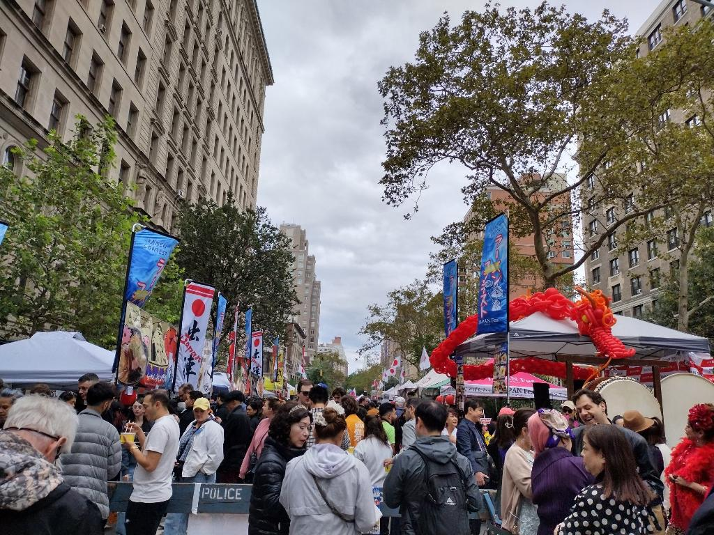
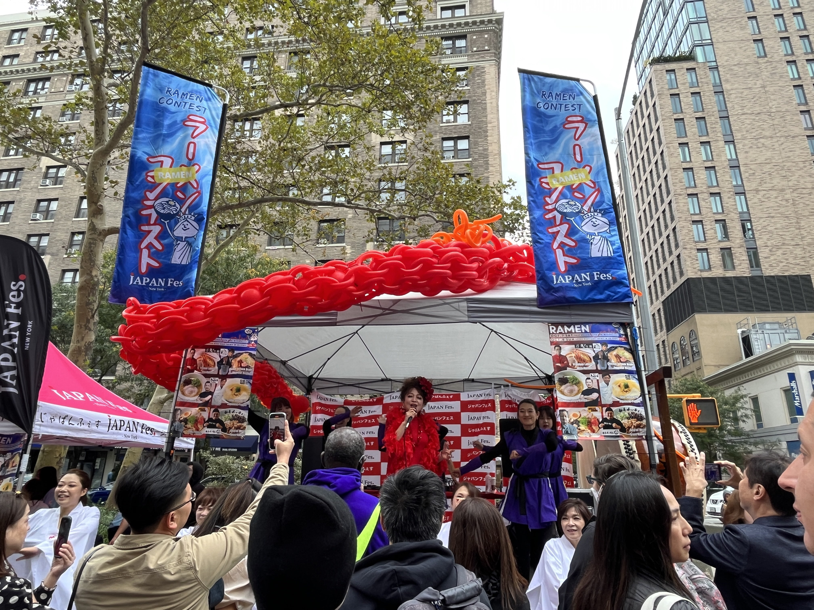
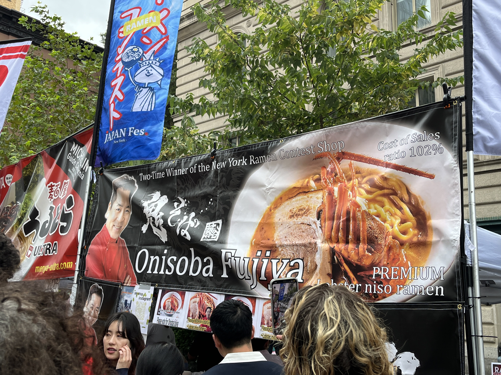
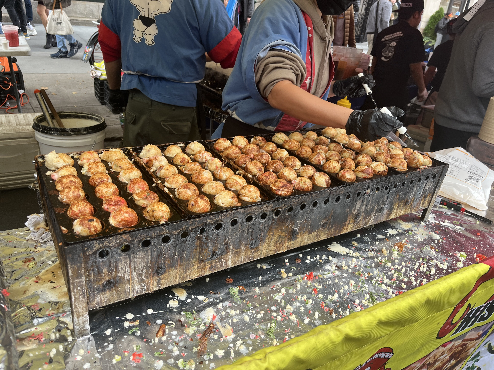
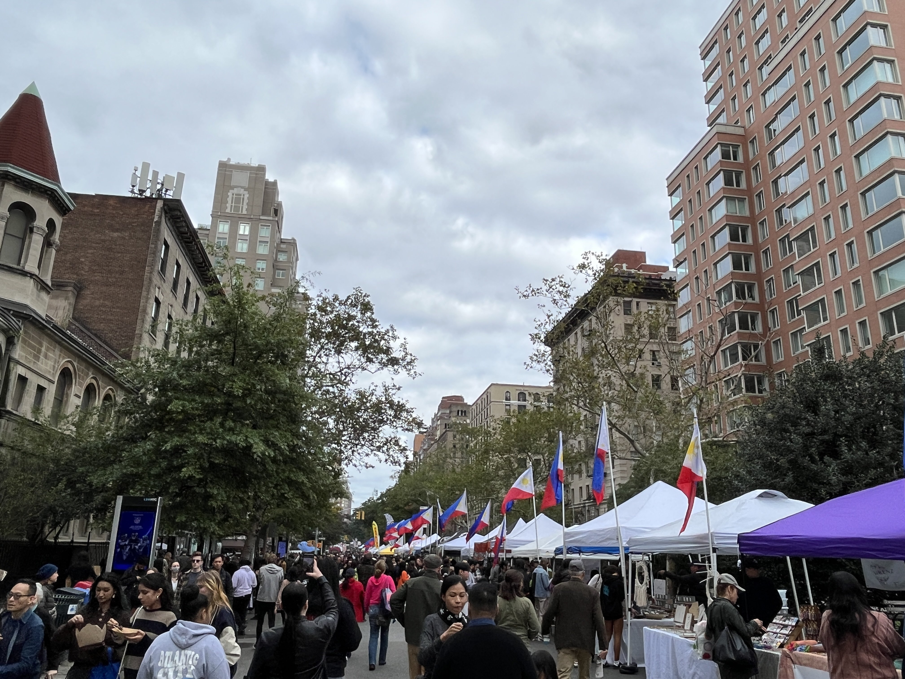
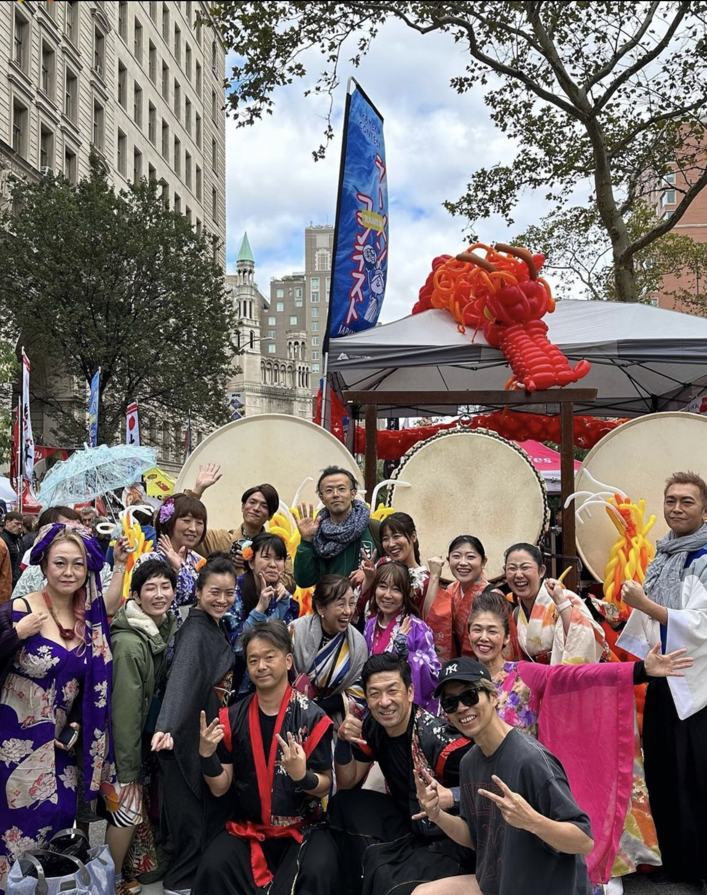

JAPAN Fes! This Japanese cultural festival held in New York City is an
epic celebration that features a wide range of Japanese cultural
elements, including traditional music and dance performances, Japanese
food vendors offering a variety of Japanese dishes, cultural
workshops, and opportunities to learn about Japanese arts and crafts.
The biggest Japanese food festival in the world has been gathering
over 250,000 people yearly and is held over 20 times a year with 750
vendors.

JAPAN Fes New York
It was my first time at this food festival, so I didn't have much
expectation besides a warning from a friend that it might be very
crowded. They were right. Off the bat, when I got to the entrance of
the festival, there were a bunch of people -- whether they were in
line at a vendor or trying to shuffle their way down the street. It
felt like I got 1 step per 10 seconds on the street with the more
popular vendors. However, that didn't take away from the lively vibe
of the festival with music blasting at the DJ set and the Japanese
performances from the stage.

The first vendor I went to was Premium Lobster Miso Ramen by Onisoba
Fujiya. This vendor had a pretty long line, as I found out from their
promoter guy (who I say deserves a raise as that man was going all out
on his role and promoting that vendor for his life) that this vendor
was a part of the ramen contest at the festival. The Premium Lobster
Miso Ramen is the champion ramen of the Ramen Contest 2022 and is back
to win their second consecutive championship. The ramen was in a small
yellow bowl cup containing noodles, two slices of meat, a shrimp, and
lobster soup.

Another popular vendor was Karls Balls (very eye catching with its
bright yellow banner and tent), which served takoyaki. The front of
the vendor had a person cooking the takoyaki, so people could actually
see how it was being made and what the cooking process of it was like.
With juicy octopus inside, a special savory sauce, and with dancing
bonito flakes, takoyaki is the most famous Japanese street food.

As I walked down the street of the festival, I didn't realize how big
the festival actually was. I tried to look down the street to see if
there was a clear ending, but all I saw were more heads, tents, and
flags. So, out of curiosity, I decided to walk all the way to the end
just to see how far the festival goes. This is when I realized that
there were not just flags of Japan but also a bunch of flags of the
Philippines. There was a whole Philippines section at the festival,
which had a lively karaoke tent. After this section, there was also a
mix of other flags like Mexico, Columbia, and Jamacia. This festival
not only had Japanese food but food from other cultures as well.

Overall, the festival was pretty fun. I enjoyed most of the food even
though all of them were veryyy overpriced. But the vibes were good.
The DJ/MC did a great job hyping everyone at the festival with his
enthusiasm and energy. And I really enjoyed the performances that
showcased traditional Japanese dances and music. The food festival is
something I would definitely go to again with friends and family
during the weekends. Tip for future self or others is to maybe get
there early, as the festival was very packed with a bunch of people.
Also, there are no bathroom stalls around... so you need to figure
that situation out before going to this event.
